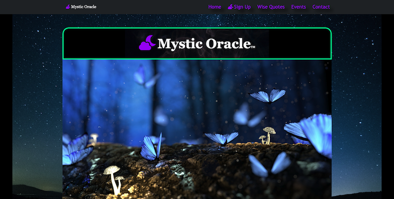

Latest Project
Mystic Oracle

Mystic Oracle is an evolving online sanctuary that brings my passion for tarot reading to a global audience, offering insight and connection to those seeking guidance. Designed with inclusivity and accessibility at its core, the platform ensures that anyone, regardless of location, can engage with the mystical world of tarot. While still in its early stages, Mystic Oracle embodies my vision of creating an immersive, user-friendly experience where individuals can explore tarot’s wisdom in a personal and meaningful way. Soon, visitors will be able to receive readings directly through the site, unlocking new paths of self-discovery and enlightenment.
Technologies used include:
- HTML
- CSS